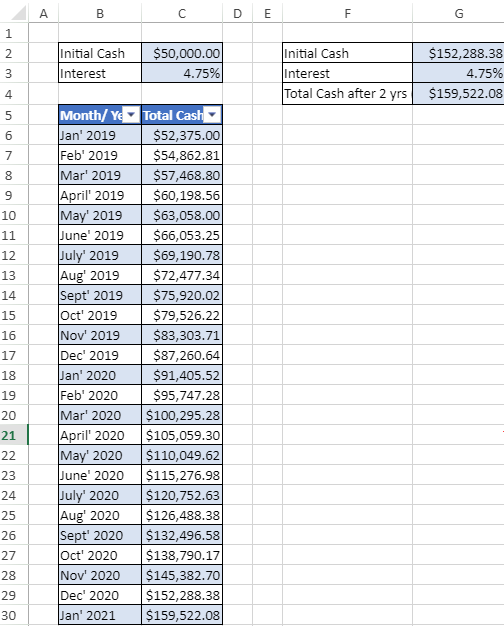
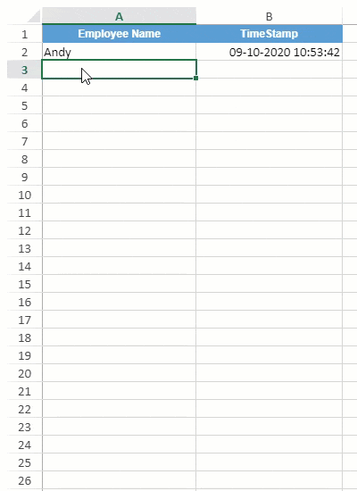

SpreadJS provides support for iterative calculation, also referred to as circular reference, just like in Excel. In general, Iterative calculation is the repeated calculation of a worksheet until a definite numeric condition is met.It is used when the formula in a cell directly or indirectly refers to its own cell in spreadsheets to recalculate the formula until a specific result is found.
You can enable iterative calculation in worksheets by using the iterativeCalculation property. You can also specify the number of times the formula should recalculate by setting the iterativeCalculationMaximumIterations property. Further, you can also specify the maximum amount of change between two calculation values by setting the iterativeCalculationMaximumChange property.
On enabling the iterative calculation, all the circular references will iteratively calculate until all the value change is smaller than the IterativeCalculationMaximumChange or the iterate count is IterativeCalculationMaximumIterations. However, on disabling the iterative calculation, all the circular reference cell values will become zero, and the other cells referenced by it will also become zero.
You can use iterative calculation in the following use-cases:
Calculating Customer's Future Investment Value
Let's assume that a customer has $50,000, and wants to invest this money in a cash deposit (CD) account to incur a monthly interest rate of 4.75%. To calculate the total value after 2 years, we’re going to calculate the principal for each month, and add the interest to the previous month. Here, we set the iterativeCalculation property to True to enable iterative calculations and set the Maximum Iterations to 24 to find the interest after 24 months (2 years), that is, the total cash value in the end of 25th month.

This use-case can be depicted using the code snippet below:
| JavaScript |
Copy Code
|
|---|---|
<script>
$(document).ready(function () {
// Initializing Spread
var spread = new GC.Spread.Sheets.Workbook(document.getElementById('ss'), { sheetCount: 1 });
// Get the activesheet
var sheet = spread.getSheet(0);
// set column width
sheet.setColumnWidth(0, 30);
sheet.setColumnWidth(1, 110);
sheet.setColumnWidth(2, 130);
sheet.setColumnWidth(3, 30);
sheet.setColumnWidth(4, 30);
sheet.setColumnWidth(5, 230);
sheet.setColumnWidth(6, 130);
// enable IterativeCalculation
spread.options.iterativeCalculation = true;
spread.options.iterativeCalculationMaximumIterations = 24;
spread.options.iterativeCalculationMaximumChange = 0.1;
// set text and values
sheet.setText(1, 1, "Initial Cash");
sheet.setValue(1, 2, 50000);
sheet.setText(2, 1, "Interest");
sheet.setValue(2, 2, 0.0475);
sheet.setText(4, 1, "Month/ Year");
sheet.setText(4, 2, "Total Cash");
// create array
var items = [
"Jan' 2019", "Feb' 2019", "Mar' 2019", "April' 2019", "May' 2019", "June' 2019", "July' 2019", "Aug' 2019", "Sept' 2019", "Oct' 2019", "Nov' 2019", "Dec' 2019",
"Jan' 2020", "Feb' 2020", "Mar' 2020", "April' 2020", "May' 2020", "June' 2020", "July' 2020", "Aug' 2020", "Sept' 2020", "Oct' 2020", "Nov' 2020", "Dec' 2020", "Jan' 2021"
];
// set array
sheet.setArray(5, 1, items);
// set formulas
sheet.setFormula(5, 2, '=C2*(1+C3)');
sheet.setFormula(6, 2, '=C6*(1+C3)');
for (var i = 6; i < 30; i++) {
sheet.setFormula(i, 2, '=C' + i + '*(1+C3)');
}
// create table to add style on a range
sheet.tables.add("Table1", 4, 1, 26, 2, GC.Spread.Sheets.Tables.TableThemes.medium6);
// set values and formulas
sheet.setText(1, 5, "Initial Cash");
sheet.setValue(1, 6, 50000);
sheet.setText(2, 5, "Interest");
sheet.setValue(2, 6, 0.0475);
sheet.setText(3, 5, "Total Cash after 2 yrs (as on Jan' 2021)");
sheet.setFormula(3, 6, '=G2*(1+G3)');
// this formula will generate circle reference
sheet.setFormula(1, 6, '=G4');
// set formatter
sheet.setFormatter(1, 2, '$#,##0.00');
sheet.setFormatter(2, 2, '0.00%');
sheet.setFormatter(1, 6, '$#,##0.00');
sheet.setFormatter(2, 6, '0.00%');
sheet.setFormatter(3, 6, '$#,##0.00');
sheet.setFormatter(5, 2, '$#,##0.00');
for (var i = 6; i < 30; i++) {
sheet.setFormatter(i, 2, '$#,##0.00');
}
// set border for cell ranges
sheet.getRange("B2:C3", GC.Spread.Sheets.SheetArea.viewport).setBorder(new GC.Spread.Sheets.LineBorder("black", GC.Spread.Sheets.LineStyle.thin), { all: true }, 3);
sheet.getRange("F2:G4", GC.Spread.Sheets.SheetArea.viewport).setBorder(new GC.Spread.Sheets.LineBorder("black", GC.Spread.Sheets.LineStyle.thin), { all: true }, 3);
sheet.getRange("B5:C30", GC.Spread.Sheets.SheetArea.viewport).setBorder(new GC.Spread.Sheets.LineBorder("black", GC.Spread.Sheets.LineStyle.thin), { all: true }, 3);
// set backcolor for cell ranges
sheet.getRange("C2:C3").backColor("#D9E3F2");
sheet.getRange("G2:G4").backColor("#D9E3F2");
});
</script>
|
|
Adding Timestamps to Cells
Iterative calculation can be used to set timestamps in worksheets. For instance, you are managing a list of tasks and want to add date and time in the adjacent cell at the completion of each task. In order to enable iterative calculation for timestamp use-case, we have set the iterativeCalculation property to true. Here, we have used the iterativeCalculationMaximumIterations property and set it to 24, so that it tells SpreadJS the maximum number of times it should run the formula. With iterative calculation, each time we enter a new item in the new row of the 'Employee Name' column, a timestamp will be automatically updated in the 'TimeStamp' column until it reaches the 23rd row.

This use-case can be depicted using the code snippet below:
| JavaScript |
Copy Code
|
|---|---|
<script>
$(document).ready(function () {
// Initializing Spread
var spread = new GC.Spread.Sheets.Workbook(document.getElementById('ss'), { sheetCount: 1 });
// Get the activesheet
var sheet = spread.getSheet(0);
sheet.suspendPaint();
// set column width
sheet.setColumnWidth(0, 200);
sheet.setColumnWidth(1, 200);
// enable IterativeCalculation
spread.options.iterativeCalculation = true;
spread.options.iterativeCalculationMaximumIterations = 24;
spread.options.iterativeCalculationMaximumChange = 0.1;
// set backcolor for cell ranges
sheet.getRange("A1:B1").backColor("#D9E3F2");
// set text in cells
sheet.setText(0, 0, "Employee Name");
sheet.setText(0, 1, "TimeStamp");
for (var i = 2; i < spread.options.iterativeCalculationMaximumIterations; i++) {
sheet.setFormula(i - 1, 1, '=IF(A' + i + '<>"",IF(B' + i + '<>"",B' + i + ',NOW()),"")');
sheet.setFormatter(i - 1, 1, 'dd-mm-yyyy hh:mm:ss');
}
// Sample data
sheet.setText(1, 0, "Andy");
var style = new GC.Spread.Sheets.Style();
style.font = "bold 12px Arial";
style.foreColor = "white";
style.backColor = "#5B9BD5";
style.hAlign = GC.Spread.Sheets.HorizontalAlign.center;
style.vAlign = GC.Spread.Sheets.VerticalAlign.center;
for (var i = 0; i < 2; i++)
sheet.setStyle(0, i, style, GC.Spread.Sheets.SheetArea.viewport);
sheet.resumePaint();
});
</script>
|
|